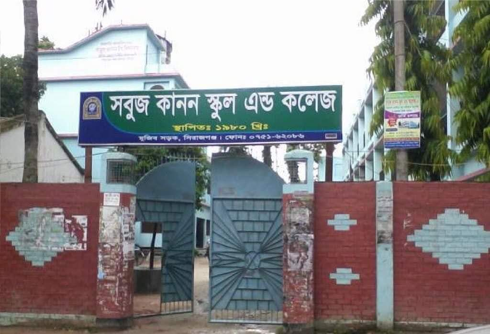
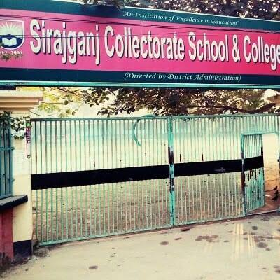
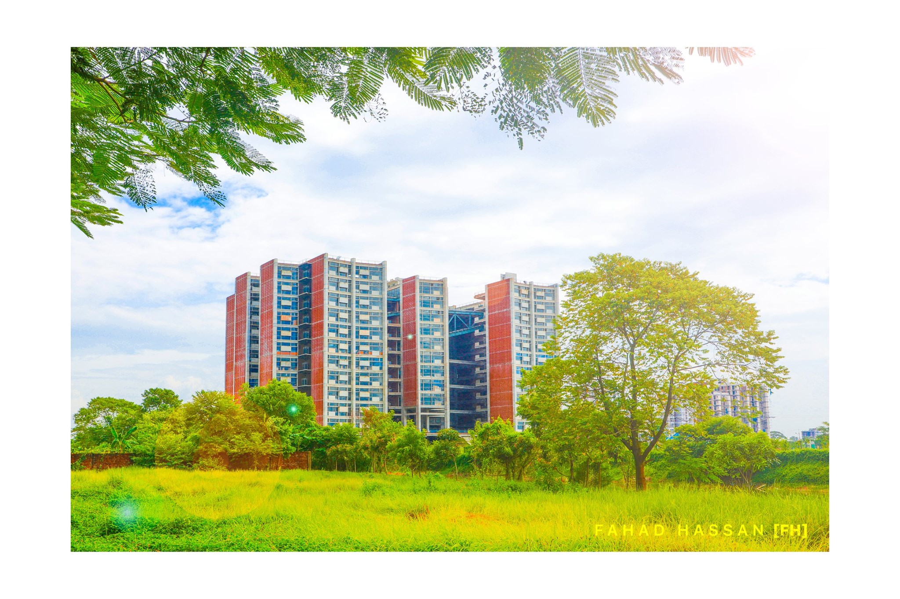

My Profile
Welcome to this site. My name is Rokibul Hasan. I’m from Sirajganj. Now, I’m a student of United International University.You can also find me on Facebook. I put my facebook id link on Navigation section.
Academic History
Education is the key to unlocking the world, a passport to freedom. Let's talk about the history of my education. I'm going to share my school, college, university name.
School
The name of my school was Sabuj Kanan School & College. It’s situated in Sirajganj. Almost 12 Years I studied here. From class Play to class 10 I studied here.
This is the facebook link of my School
Sabuj Kanan School

College
After finishing my studies in school, I started to going in college. Sirajganj Collectorate School & College, Sirajganj is the college where I study almost 2. I finished my inter-mediate here.
This is the facebook link of my College.
Sirajganj Collectorate College

University
After 2 years of finishing inter-mediate, everyone was fighting for admission test. But my result was poor. So, I'm admit in United International University which is top private university in Bangladesh. Now, I’m studying B. Sc in Computer Science & Engineering (CSE)
This is the website link of my University.
United International University
